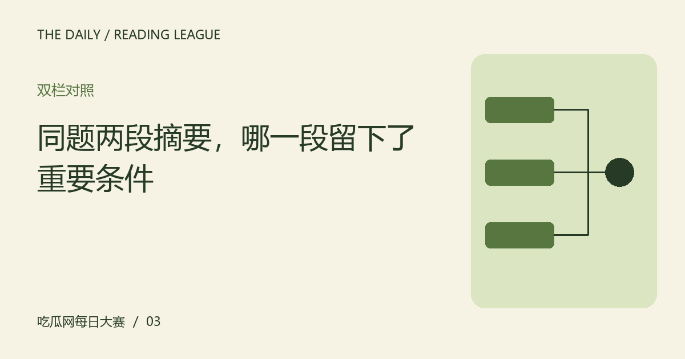

同题两段摘要，哪一段留下了重要条件
摘要不只是越短越好。用同一份材料比较两种写法，观察哪些条件影响理解，哪些词只是在增加情绪。

比较前先固定同一份材料
两段摘要若来自不同版本，差异可能只是资料范围不同。练习时先选定完整材料，并记录对象与时间，让双方拥有相同起点。比较的是摘要怎样保留信息，而不是猜测哪个作者更可信；也不要把对某种文风的偏好当成准确性的证明。
检查主语与适用范围
把某一场写成全部场次，把部分观众写成所有人，都会扩大原材料的含义。摘要可以省略枝节，却应保留决定范围的词。对照时圈出主语、数量与限定，看看哪一段让读者更容易知道消息涉及谁，以及哪些情况不在讨论范围里。
情绪词不能替代新增内容
重磅、彻底或全网震惊可能增强语气，却未必增加可用信息。如果删去这些词后摘要几乎没有内容，就要回到材料找具体变化。另一段即使平实，只要说明发生什么、有什么未定事项，也可能更适合需要快速了解情况的读者。
允许摘要有不同用途
目录摘要帮助选择文章，事件摘要帮助理解进展，二者保留的细节未必一样。评价时说明自己的阅读任务，避免要求一句话承担完整报道。好的摘要应诚实呈现范围，并提供继续阅读的路径，而不是用确定语气掩盖原材料中的空白。
自己写第三种版本
在两段示例之外，试着写一个保留对象、变化与未知的简短摘要，再核对每个词是否有材料支持。不要为了显得独特增加新数字或人物动机。完成后比较哪一条条件最不能删掉，这会比简单选出胜负更有助于下次快速阅读。
编辑演示：本文用于展示专题阅读；虚构情境不构成真实人物或事件报道。
下一篇：先发生和造成了，为什么不是同一种关系 →